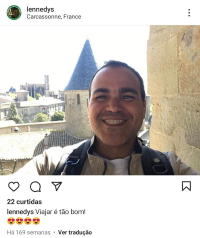
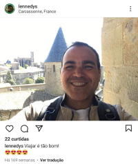

Quem é o melhor professor de manuntenção?
Lennedy Soares
Atualmente Mora em Natal (RN), é professor no instituto federal do Rio Grande do Norte, Campus ceará mirim . Sua jornada lecionando iniciou em 2010 , e de fato no instituto federal se iniciou em março de 2012 no campus Ipanguaçu,logo em seguida passou para o seu 2° campus ,(santa Catarina), e em janeiro de 2020 , sua jornada no campus (ceará mirim) seu terceiro campus ,começou.
Sua disciplina de entrada no IF foi Manutenção de Computadores,sua agenda de trabalho é de segunda a sexta , não só dando aula ,mais orientando projetos ,e outras demandas .


Áreas de Interesse
- Inteligência Artificial
- Robótica
- Manuntenção de Computadores
- Eletrônica
- Eletricidade
- Automação Residencial e Industrial
| nome da disciplina | turma | hórario |
|---|---|---|
| Eletrônica | INFO2M | Ter e Sex, 10h30 as 12h |
| Manuntenção | INFO3V | Ter e Qua, 16h30 as 18h |
Publicações
o professor Lennedy possui três publicações
 

Educação
Graduação em engenharia da computação, UFRN 2003 a 2007. E Mestrado em ciências e engenharia do petróleo (UFRN) departamento de ciências e engenharia do petróleo